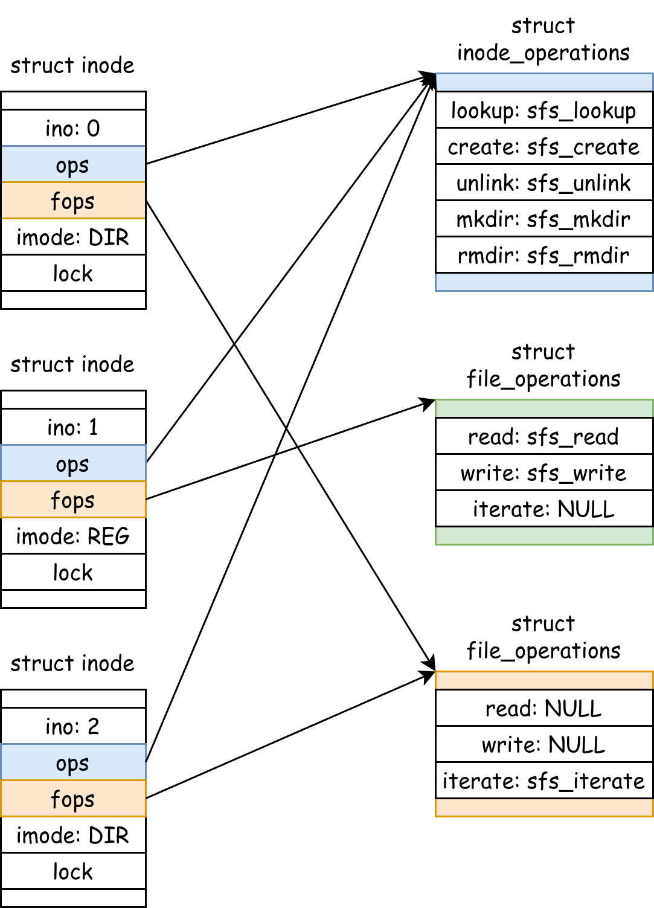
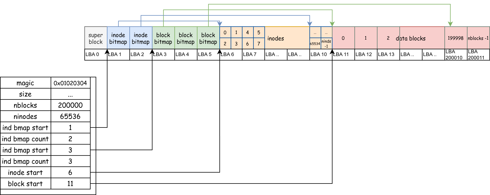
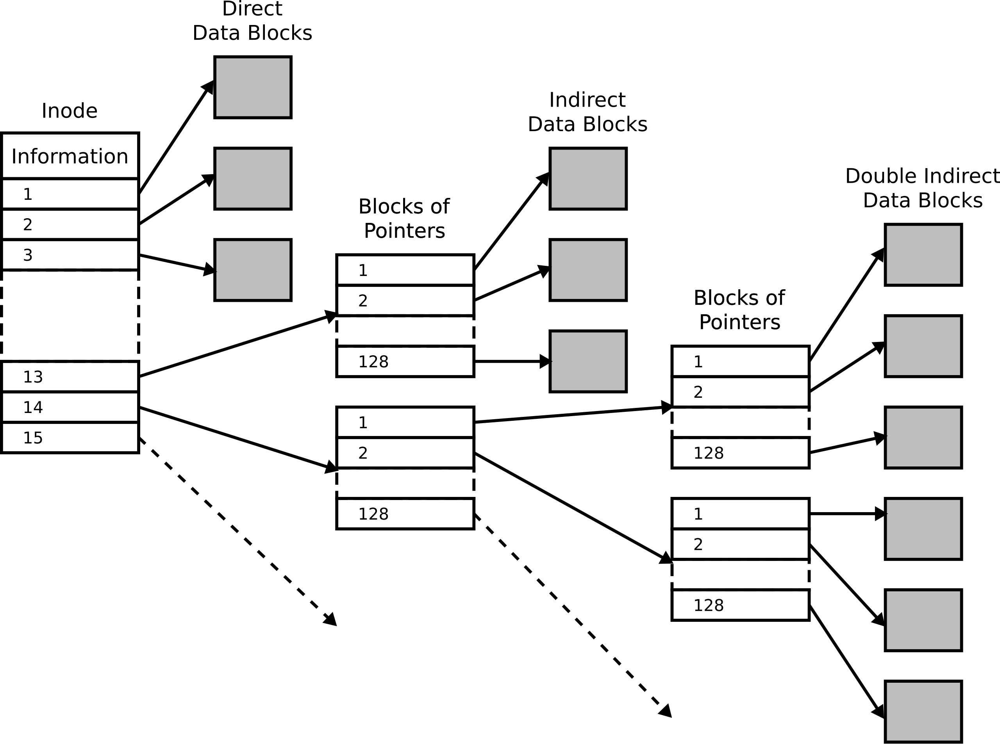
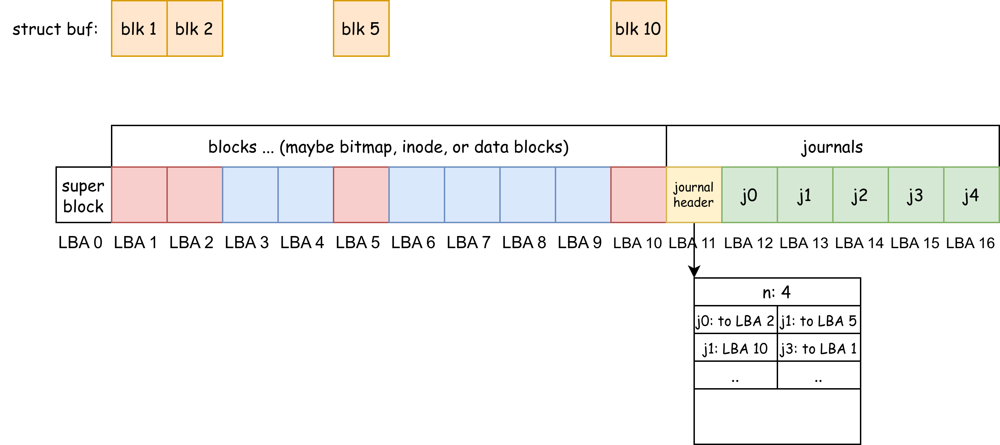

File System 2¶
xv6-lab14 代码分支
https://github.com/yuk1i/SUSTechOS/tree/fs
使用命令 git clone https://github.com/yuk1i/SUSTechOS/ -b fs xv6-labfs 下载 xv6-labfs 代码。
使用 make run 运行本次 Lab 的内核，它会开始一个文件系统的自测，其源代码位于 fs/fstest.c。
初始的文件系统由 scripts/mkfs.c 构建，它是一个跑在宿主机上的程序。Makefile 会先调用它创建 fs.img，再启动 QEMU。
Virtual File System¶
VFS（Virtual File System，虚拟文件系统）是操作系统内核中的一个关键抽象层，主要用于屏蔽不同文件系统（如 FAT32、ext4等）之间的差异，为用户空间程序提供统一的文件操作接口。
我们在上节课讨论了 "用户可以对文件系统做什么？"，也就是文件系统暴露的 API，其中包含 open、creat、mkdir、unlink、rmdir 等。
要想实现对于不同的文件系统实现的抽象，我们应该定义如上标准的接口 interface，并令文件系统的实现方来 implements 这些接口。
这个思想即是我们在 Java 和 面向对象编程 课程中学习到的使用抽象类分割对象的定义和实现。
在 C 语言中实现这样的面向对象，我们需要手动定义虚表 (Virtual Table, vtable)。
// os/fs/fs.h
// struct file is an "object" in the kernel, which can be operated with "ops".
struct file {
// freflock proctects the ref.
int ref; // reference count
sleeplock_t lock; // lock protects pos.
loff_t pos; // read/write position
// --- following fields are immutable since filealloc ---
fmode_t mode; // file mode
struct file_operations *ops;
void *private;
};
我们首先定义一种对象 struct file，对它的操作保存在一个 struct file_operations 指针中，这个结构体中存储着 函数指针：
/**
* @brief read & write is for regular files. iterate is for directories.
*/
struct file_operations {
int (*read)(struct file *file, void *__either buf, loff_t len);
int (*write)(struct file *file, void *__either buf, loff_t len);
int (*iterate)(struct file *file, void *__either buf, loff_t len);
int (*close)(struct file *file);
};
当我们 new 一个 struct file 时，我们需要令它的 ops 指向某个预定义的结构体。在当我们对这个文件调用 read 或 write 时，我们实际上是在调用 pfile->ops->read(pfile, buf, len)。
对于文件的元信息(metadata)，我们存储在一个 struct inode 中。我们可以创建以及删除文件或目录，这些即是对于一个 struct inode 的操作，所以我们需要定义一个 struct inode_operations 结构体来存储处理这些操作的函数的指针：
// struct inode is a metadata of a file.
struct inode {
struct superblock *sb;
uint32 ino; // inode number
imode_t imode;
struct file_operations *fops;
struct inode_operations *iops;
void *private; // private data for filesystem implementation
// --- above fields are immutable since allocation `iget` ---
// sb->lock protects the next pointer and refcnt.
int ref; // reference count
struct inode *next; // for linked list in itable
sleeplock_t lock;
// sleeplock protects following fields
loff_t size; // file size
uint16 nlinks;
};
struct inode_operations {
int (*lookup)(struct inode *dir, struct dentry *dentry);
int (*create)(struct inode *dir, struct dentry *dentry);
int (*unlink)(struct inode *dir, struct dentry *dentry);
int (*mkdir)(struct inode *dir, struct dentry *dentry);
int (*rmdir)(struct inode *dir, struct dentry *dentry);
};
在我们的文件系统实现（称为 SimpleFS, sfs）中，我们定义对 inode 的操作、对普通文件 (REG) 的操作、和对目录 (DIR) 的操作。
int sfs_lookup(struct inode* parent, struct dentry* dentry);
int sfs_create(struct inode* parent, struct dentry* dentry);
int sfs_unlink(struct inode* parent, struct dentry* dentry);
int sfs_mkdir(struct inode* parent, struct dentry* dentry);
int sfs_rmdir(struct inode* parent, struct dentry* dentry);
static struct inode_operations sfs_inode_ops = {
.lookup = sfs_lookup,
.create = sfs_create,
.unlink = sfs_unlink,
.mkdir = sfs_mkdir,
.rmdir = sfs_rmdir,
};
int sfs_read(struct file* file, void* __either buf, loff_t len);
int sfs_write(struct file* file, void* __either buf, loff_t len);
static struct file_operations sfs_regfile_ops = {
.close = generic_file_close,
.read = sfs_read,
.write = sfs_write,
};
int sfs_iterate(struct file* file, void* __either buf, loff_t len);
static struct file_operations sfs_dirfile_ops = {
.iterate = sfs_iterate,
};
在创建一个属于 SFS 的 inode 时，我们需要填充里面的 iops 结构体。
struct inode* sfs_iget(struct superblock* sb, uint32 ino) {
struct sfs_vfs_superblock* sfs_sb = sb->private;
if (ino >= sfs_sb->dsb->ninodes) {
return NULL; // inode number out of range
}
struct inode* ind = iget_locked(sb, ino);
struct buf* inode_buf = bread(0, inode_to_disk_blkno(sfs_sb->dsb, ino));
struct sfs_dinode* disk_inode = blk_to_inode(inode_buf->data, ino);
ind->imode = disk_inode->type;
if (ind->imode & IMODE_DIR) {
ind->fops = &sfs_dirfile_ops;
} else if (ind->imode & IMODE_REG) {
ind->fops = &sfs_regfile_ops;
} else {
panic("sfs_iget: unknown imode");
}
ind->iops = &sfs_inode_ops;
ind->private = NULL;
ind->size = disk_inode->size;
ind->nlinks = disk_inode->nlink;
brelse(inode_buf);
return ind;
}
这就是 VFS 如何实现对文件系统的抽象，以及 C 语言里面如何实现面向对象编程。

bio: Block-Level IO¶
fs/bio.c, fs/buf.h
我们在上节课提到，块设备的 IO 是以块为单位的，我们用 bread，bwrite 和 brelse 来抽象对块设备的 IO 访问。
// Return a locked buf with the contents of the indicated block.
struct buf *bread(uint dev, uint blockno);
// Write b's contents to disk. Must be locked.
void bwrite(struct buf *b);
// Release a locked buffer.
// Move to the head of the most-recently-used list.
void brelse(struct buf *b)
每当我们需要读写一个块时，我们使用 bread(0, blkno) 先读取第 blkno 个块上的数据到返回的 struct buf 中。尽管我们可能只需要读取每个块 4KiB 中的 32B 数据，我们仍需要从底层磁盘设备中读取出整个 4KiB 的块，因为我们写入时也需要将整个块写入回去。
当我们修改了 struct buf 中的数据后，我们使用 bwrite 将改动同步到块设备中。如果我们不再需要这个 struct buf，我们使用 brelse 释放它。
struct buf 的锁
当我们在同一个块上存储了 [ A ][ B ][ C ][ D ] 四块数据时，如果有两个进程，分别想要修改 [A] 到 [A']、修改 [B] 到 [B']。如果没有锁的话，两个进程都读取出来 ABCD，但是第一个进程可能会把块 [ A'][ B ][ C ][ D ] 写入块设备，而第二个线程可能会把 [ A ][ B' ][ C ][ D ] 写入块设备。如果这两个线程发生竞争，那么块设备上保存的数据要么是前者、要么是后者，总之总会有一个线程写入的数据丢失。
为了防止这样的数据竞争，我们令每个 blkno 都唯一对应着一个 struct buf 对象，每个 struct buf 的对象都带一个锁。
当某个进程使用 bread 从 bio.c 中获取一个 struct buf 时，对这个锁上锁，这暗含着该进程对 blkno 这个块拥有独占的访问，直到它主动 brelse 释放掉这个 struct buf。
注意！我们不再是一把大锁保平安了！
那么如何保证 每个 blkno 都唯一对应着一个 struct buf 对象 的？
我们使用一个链表将内核中的所有 struct buf 串联起来，每次要么从链表中找到一个已经存在的 struct buf、要么新建一个并丢到队列中。我们使用一把大锁来保护这个链表。
在找 struct buf 时，我们持有大锁；在读写时，我们只持有小锁。我们允许了多个进程同时访问多个不同的块，同时保证了对每个块访问的原子性。
struct buf 缓存
当只有我这个操作系统能访问整个块设备时，我们会发现：对应同一个块，我们读取到的数据要么是它原来的数据、要么是我们上次写入的数据。
所以说，我们可以将磁盘上的块缓存到内存中！
具体而言，当进程A bread(0, 1) 获取到第 1 个块后，并 bwrite 写入以及 brelse 释放后。我们可以断言，这个块的 struct buf 对象中保存的内容，和磁盘上是一致的。当另一个进程 B 也在尝试读取第 1 个块时，操作系统就可以将内存里面的 struct buf 对象直接返回给 B，而不用从内存中重新读取内容。
SimpleFS: On-Disk Layout¶
我们首先回顾一下上节课内容，在实现一个存储在磁盘上的文件系统时：
-
我们分为两种重要的对象：
data block和struct inode，他们各具有线性的全局唯一编号 (block number,inode number)，我们使用 bitmap 来分配它们。 -
每个文件都有一个
struct inode对象，它的文件内容在data block中存储，通过一个单独的next[]数组链接起来。 -
对于一个目录，它也是一个文件，它也有一个
struct inode，而它的文件内容是children[]数组，即文件夹下一级文件的指针。

我们拥有四个连续的区域，分别表示 inode bitmap、block bitmap、inodes 和 blocks。连续就意味着我们可以轻易地通过 start + ino/blkno 来定位到每个 inode / block，而 ino/blkno 是自然连续递增的。对于每个 inode/block，在前面的 bitmap 区域都有一个 bit 对应着该 inode/block 是否占用。
对于第一个块 （LBA 0），我们用它来存储一些文件系统的关键信息，例如四个连续的区域的起始位置和大小。
struct sfs_dsuperblock {
uint32 magic;
uint32 size; // how many blocks in the whole fs structure? include this.
uint32 nblocks; // how many data blocks?
uint32 ninodes; // how many inodes?
uint32 ind_bmap_starts; // where does the bitmap of inode start?
uint32 ind_bmap_count; // where does the bitmap of inode start?
uint32 blk_bmap_starts; // where does the bitmap of inode start?
uint32 blk_bmap_count; // where does the bitmap of inode start?
uint32 inodestart; // where the inodes starts.
uint32 blockstart; // where the blocks starts.
};
#define SFS_MAGIC 0x10203040
为了使一个 block 内恰好能容下整数个 struct inode，我们令 struct inode 的大小恰好为 64 bytes。因此，每个 block 内就有 4096 / 64 = 64 个 inode。
#define NDIRECT 12
struct sfs_dinode {
uint16 type;
uint16 devno; // device number, for I_DEV
uint16 _pad;
uint16 nlink; // number of links to this inode
uint32 size; // size of this file (in bytes)
uint32 direct[NDIRECT]; // direct pointers to data blocks
uint32 indirect;
}; // size of the on-disk inode: 16 * uint32 = 64 bytes.
static_assert(sizeof(struct sfs_dinode) == 64);
// Inodes per block
#define IPB (BSIZE / sizeof(struct sfs_dinode))
// Inode offset in a block
#define IOFF(i) (i % IPB)
当我们需要从块设备读取一个 struct inode 时，我们首先算出该 ino 在 inodes 组里面的第几个 block：ino / IPB，再加上 dsb->inodestart，即可算出该 inode 在块设备的哪个 block 上。然后，我们读取整个块，其中包含 IPB 个 inode，所以 ino 在这64个 inodes 的第 (ino / IPB) 个上。
// Inode to disk block number conversion
static inline uint32 inode_to_disk_blkno(const struct sfs_dsuperblock* dsb, uint32 ino) {
return (ino / IPB) + dsb->inodestart;
}
static inline struct sfs_dinode* blk_to_inode(void* blk, uint32 ino) {
return &((struct sfs_dinode*)blk)[IOFF(ino)];
}
// simplefs_vfs.c: sfs_iget
struct inode* sfs_iget(struct superblock* sb, uint32 ino) {
// ...
struct buf* inode_buf = bread(0, inode_to_disk_blkno(sfs_sb->dsb, ino));
struct sfs_dinode* disk_inode = blk_to_inode(inode_buf->data, ino);
ind->size = disk_inode->size;
// ...
}
文件数据存储在 data blocks 中，每个 inode 拥有对它所属的 data blocks 的指针。在实践中我们使用 跳表 来存储 data blocks 的指针，以此来兼顾顺序和随机访问的性能、以及存储大小文件所用的空间。
对于文件的前 12 个数据块，我们直接在 struct inode 结构体中 保存它们的 blkno：uint32 direct[NDIRECT];。我们称这样的 blkno 为 Direct Pointer，每个 inode 中拥有 12 个 direct pointer。
当我们拥有这个 direct pointer 时，我们只需要再读取一个块（即 direct pointer 的值），即可获得到文件的真实内容。
同时，我们设置一种 Indirect Pointer，它所指向的块中不保存文件数据，而是保存着 Direct Pointer。每个 indirect 块可以保存 BSIZE / sizeof(uint32) 个 direct pointer。
当我们拥有一个 indirect pointer 时，我们要先读取这个块，从这个块中找到 direct pointer，再读取这个块，共计两次块读取才能读取到文件的真是内容。
如果需要支持更大的文件，我们还可以设置 doubly indirect pointer 和 triply indirect pointer。

当读写一个文件时，我们可以从要读写的位置 （addr）算出它位于第 addr_blkno 个块中，然后通过 struct inode 中保存的 direct pointer 和 indirect pointer 找到这个块的 blkno；再算出这个 blkno 相对于整个块设备的 LBA 编号 (datablock_to_disk_blkno)，最终通过 bread 得到装有这个块数据的 struct buf。
int iaddr(struct inode* inode, uint32 addr, uint32* oblkno) {
int ret = 0;
// read the inode
struct buf* inode_buf = bread(0, inode_to_disk_blkno(sb.dsb, inode->ino));
struct sfs_dinode* disk_inode = blk_to_inode(inode_buf->data, inode->ino);
uint32 blkno;
uint32 addr_blkno = addr / BSIZE;
if (addr_blkno < NDIRECT) {
// in direct blocks
blkno = disk_inode->direct[addr_blkno];
*oblkno = blkno;
} else {
// in the indirect block
struct buf* ind_buf = bread(0, datablock_to_disk_blkno(sb.dsb, disk_inode->indirect));
uint32* ind_data = (uint32*)ind_buf->data;
blkno = ind_data[addr_blkno - NDIRECT];
brelse(ind_buf);
*oblkno = blkno;
}
out:
brelse(inode_buf);
return ret;
}
int iread(struct inode* inode, uint32 addr, void* __either buf, loff_t len) {
int ret = 0;
loff_t pos = addr;
loff_t end = MIN(addr + len, inode->size);
while (pos < end) {
uint32 blkno;
ret = iaddr(inode, pos, &blkno);
if (ret < 0)
goto out;
struct buf* bp = bread(0, datablock_to_disk_blkno(sb.dsb, blkno));
// calculate pos & len inside the block
uint32 offset = pos % BSIZE;
uint32 to_read = MIN(end - pos, BSIZE - offset);
vfs_either_copy_out(buf, bp->data + offset, to_read);
brelse(bp);
pos += to_read;
buf = (void*)((uint64)buf + to_read); // move the buffer pointer
}
out:
return pos - addr; // return the number of bytes read
}
文件夹的子文件列表保存在“文件夹这个文件”的内容中，它们像数组一样排列，我们令每个子文件的结构体大小恰好为 32 bytes，其中包含子文件的 ino 和文件名 name。
#define SIMPLEFS_DIRSIZE 28
struct sfs_dirent {
uint32 ino;
char name[SIMPLEFS_DIRSIZE];
}; // size of the dirent: 32 bytes
static_assert(sizeof(struct sfs_dirent) == 32);
读写文件夹的文件列表即可像读写普通文件一样进行。值得注意的是，删除一个文件的时候，我们需要维护文件列表 struct sfs_dirent 结构体连续。如果要删除的 sfs_dirent 位于这个列表中间，我们将列表尾部的 sfs_dirent 移动到要删除的 sfs_dirent 的位置上即可（同时要减少 inode->size）。
对于文件写入，我们有以下流程：
- 通过 bitmap 分配一个数据块。
- 将该数据块编号保存在
inode中。 - 写入该数据块。
可靠性 Reliability¶
块设备它可靠吗？所有电子垃圾都是有预计使用寿命的。对于 SSD，我们通常以总写入量 TBW 计算；对于 HDD，我们一般使用运行时间计算。当电子垃圾运行超过一段时间后，它们可能会遇到不可恢复的错误。我们可能在计算机组成原理课上学到过 Mean-Time-To-Failure (MTTF) 的概念。
如果当块设备变得不可靠时，我们怎么令存储在它上面的文件系统可靠呢？这里的可靠性指，当块设备读写可能会出错时，文件系统应该怎么做来尽量降低出错的影响？
RAID¶
Redundant Array of Inexpensive (Independent) Disks (RAID)
如果单个块设备会不可靠，那么我们可以通过将数据保存到多个块设备，以此来降低单点故障的可能性以及它造成的影响。同时，单个大容量的硬盘可能会很贵，那为什么不把数据均匀存储在多个便宜的磁盘上？
RAID 的底层原理是异或：已知 abc 是三个 bit，令 x = a XOR b XOR c，那么：
a = x XOR b XOR cb = a XOR x XOR cc = a XOR b XOR x
这表示着：如果我们将 x 和 abc 分别存储在 4 个硬盘上，当有任何一块盘数据不可读时，即 abcx 任何一个未知时，我们可以通过其它三块硬盘上的数据恢复出丢失的那个 bit。我们将 abc 称为数据，x 称为 parity (校验)。
那么，如果同时坏了两块盘呢？
RAID 不是备份
RAID 对抗的是单盘的 failure。
https://mirrors.tuna.tsinghua.edu.cn/tuna/tunight/2021-11-13-lto-intro/slides.html

Crash Recovery¶
回顾我们上述的文件写入流程，我们需要修改三样东西：block bitmap，inode，和 data block。
如果写入一半的时候，系统突然断电了、或者内核崩溃了，会怎么样？如果在 block bitmap 和 inode 之间发生 crash，我们将永远失去一个 block。
如果说块设备的写入单位是块，那么我们可以假设每次块设备写入一个块的操作都是原子的。按照我们在同步所讲的，既然我们不期望中间状态被其它人发现，那么只需要将好几步操作打包成”一个原子的操作“即可。但是块设备并没有提供原子的 multi-write。
更讨厌的是，块设备会因为性能原因 reorder 我们的写入请求（想象一下旋转的磁盘，优先处理将要转到的 LBA），以及在数据未落盘时就从 bwrite 中返回。假如磁盘先修改了 inode 再修改了 bitmap，而前者落盘成功后者没有落盘，该 inode 会引用到一个未被分配的块，那假如这个块又被分配给其他人了？
为了对抗 reorder，我们可以引入一种新的块设备 IO 命令：fence。它强制要求块设备在落盘前面的写入前，不得处理后面的写入。
Journaling¶
Journaling 文件系统是一种能记录（log）文件系统 变化“意图” 的文件系统。它在进行实际文件操作之前，先把即将进行的更改操作写入一个专用的日志区域（Journal）。只有当日志记录成功后，才会真正修改主数据区。
简单类比：就像你要修改一个文件之前，先在备忘录上写一条“我要把这些东西改成 XX 模样”，然后再去执行。
在数据库领域，同样的技术被称为 Write-Ahead-Log (WAL)。

上图表示了一个 on-disk 的 layout，前面的蓝色和红色块是 blocks，它可能用于存储 bitmap、inodes、data blocks 等。
假设有一个对文件的写入请求(write)，经过文件系统层后，它需要向块设备写入 LBA 1、2、5、10。
-
但是，当文件系统使用
bwrite写入一个块时，我们先将它在内存中缓存起来，即图上方的橙色块，表示内存中的struct buf。 -
当该
write结束后，我们先将struct buf1、2、5、10 写入 journals 区域的j0、j1、j2、j3。 -
使用 fence 确保上述步骤落盘。构造 journal header，其中包含：
n：j0到j3是我们的”意图“，j0要写入到 LBA 2、j1要写入到 LBA 5。将该 journal header 写入到 LBA 11。 -
使用 fence 确保上述步骤落盘。然后，将
struct buf1、2、5、10 写入 LBA 1、2、5、10。 -
使用 fence 确保上述步骤落盘。然后，清空 journal header。
-
使用 fence 确保上述步骤落盘。
write结束。
现在，我们可以分析假如在步骤 1-6 中发生 crash，系统该如何恢复。
-
这时，所有修改仍然停留在内存中，磁盘上的数据结构是完整的。不需要恢复。
-
磁盘的 blocks 区域数据完整。不需要恢复。
-
磁盘的 blocks 区域数据完整，并且我们"看不到" journals 区域的元数据（即 journal header）。不需要恢复。
-
系统在加载文件系统时读取 journal header，并发现其中有我们的 写入意图。从 journals 区域读取出我们需要 重放 replay 四个 blocks 的数据，从
j0到j3，并依据 journal header 中记录的它们的最终目的地写入到前面的 blocks 区域。如果此时系统仍然崩溃，我们没有修改 journals 区域的数据，重新从头开始重放即可。
-
同步骤4，从头重放。
-
磁盘的 blocks 区域数据完整，并且是写入后的结果。